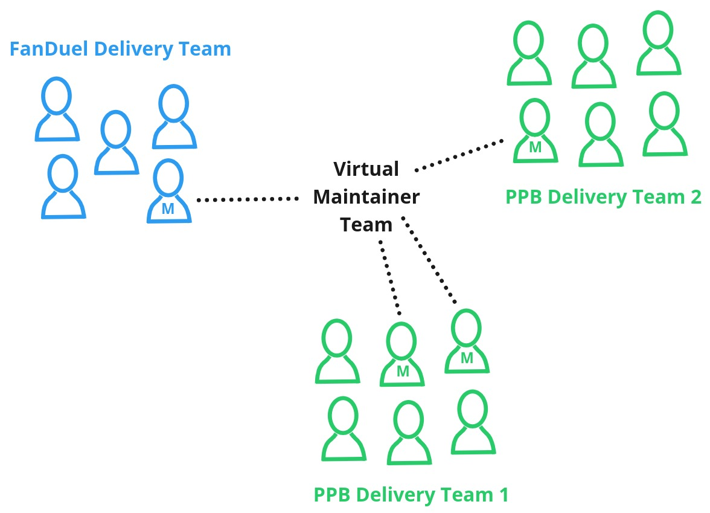
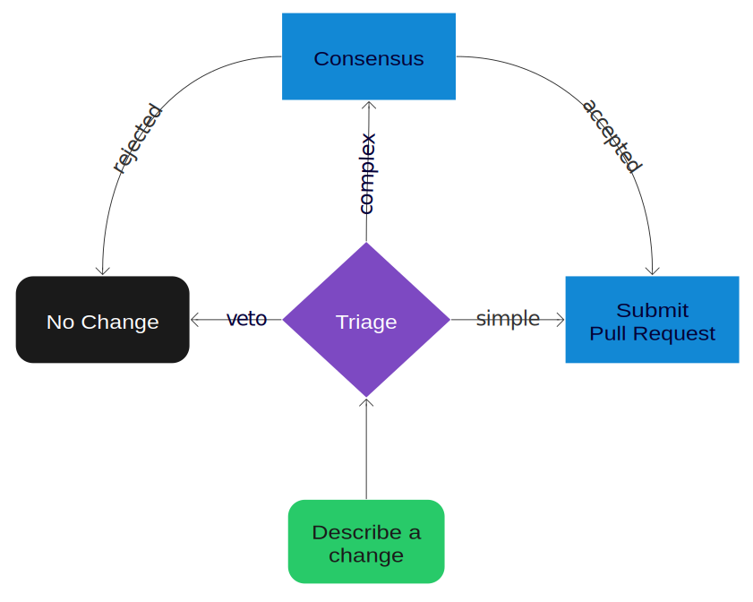

Divisional Independence
One of the challenges of operating a capability at stage 3 of the inner source pyramid is how to maximise the independence of each contributing team. This is especially important if your reason for operating at stage 3 is the need for a high rate of change: even a small collaboration overhead between teams will add up.
To promote divisional independence:
- ensure a maintainer exists in every regularly contributing team (the “local maintainer”)
- the maintainers agree a triage process to classify risk & complexity of change
- trust low risk/simple change to progress independently under the guidance of the local maintainer
- use an efficient consensus mechanism between maintainers to agree high risk/complex changes
- use a branching and release strategy to allow divisions release autonomy without diverging.
Maintainers in Contributing Teams
Maintainers are the technical experts in how the capability is built and deployed: knowledge which allows the contributing team they are a member of to be more independent. In stage 3, the maintainers are distributed across many delivery teams and represent their team when the maintainers come together to work as a group themselves.

Triage
The objective of triage is to:
- minimise the overhead for low risk/simple changes so they progress quickly.
- ensure high risk/complex change will have the required consensus.
- prevent incorrect or mis-informed ideas or work from continuing.
This supports divisional independence through the critical task of clarifying which changes can progress independently, and which require up-front collaboration and agreement.

An effective triage process is usually a simple one as it must be transparent, well known and consistently used (i.e. no short-cuts for ‘special’ maintainers!). For example a common process is:
- Local maintainer will triage their team’s backlog and highlight items that they are unsure of, or definitely require collaboration.
- GitHub issue raised for technical discussion wrt each highlighted item, advertised via community Slack channel and tracked in a GitHub project board.
- GitHub issue gathers feedback/advice from maintainers and a decision on whether the change can immediately progress (i.e. ‘this discussion was enough’), or whether more rigorous consensus is required (i.e. RFC).
- Regular maintainer meetings run by the capability owner use the GitHub project board to sweep up any unresolved issues that are in danger of becoming stale.
Such a process can be documented in a CONTRIBUTING.md; is both transparent and inclusive for all capability users; and is simple enough to be easily remembered and used consistently.
Pull Request
Changes that are triaged as ‘simple’ can be progressed independently:
- Use draft pull requests to make work more visible. This helps catch any mistakes made in triage or simple changes that become complex.
- Pull request review and approval is done by the local maintainer on behalf of the whole maintainer group (relying on the quality standards agreed in stage 2).
Complex changes require up-front consensus (covered separately), but once that consensus is reached follow a similar pattern:
- Use draft pull requests to encourage on-going discussion and collaboration during development as various aspects of the complex change become clearer (or change).
- Pull request review and approval is usually required from a maintainer in each contributing team to confirm agreement.
Merge & Release
Usually a division will own and run it’s own capability deployment using it’s preferred local deployment topology which integrates with local service management, operational support and incident management tools and teams. This provides full independence of the release deployment and support process; but from a set of approved PRs collaboration is required to agree release milestones and any development author support. This remains unsolved at present within Flutter, with capabilities in stage 3 that have a high rate of change often suffering release contention between divisions and wasteful duplicated release QA. So the guidance that can be provided is limited to the following observations:
- Operability concerns are generally driving contributing teams towards standardisation (e.g. of release artefacts, telemetry/log conventions).
- Usage of the same 3rd party cloud provider (AWS) is driving increasing consistency in deployment topology.
- To reduce manual/end-to-end testing repetition and meet the need to collaboratively test candidate releases there is a growing desire among teams for ‘reference deployments’ during CI.
- Choice of branching strategy affects release contention: e.g. some teams are experimenting with GitFlow with divisional develop branches.